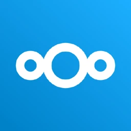

01
Un dossier partagé pour la famille
Voyage, papiers de la maison, photos d'un anniversaire : un dossier commun où chacun ajoute ses fichiers depuis son téléphone ou son PC.
Dossier partagé→Téléphones→Tout le monde à jour

Ton propre cloud, gratuit et open source, installé chez toi : tes fichiers synchronisés partout, des dossiers partagés et des documents modifiés à plusieurs, sans abonnement.

Nextcloud est un cloud gratuit et open source que tu installes sur ta propre machine (un NAS, un mini PC, un serveur) et que tu utilises dans ton navigateur, sur ton PC et sur ton téléphone. Comme Google Drive, il synchronise tes fichiers sur tous tes appareils et te laisse les partager : dossiers communs, liens avec mot de passe et date d'expiration. Il gère aussi ton agenda et tes contacts, et des centaines d'applis s'ajoutent en un clic : visio (Talk), mail, notes, suite bureautique pour modifier des documents à plusieurs en même temps (Nextcloud Office). C'est un vrai serveur à installer et à entretenir : la méthode conseillée pour débuter est Nextcloud All-in-One, avec Docker.
Avec Docker et l'image officielle Nextcloud All-in-One (Container Manager sur Synology, QNAP, Unraid…). Une interface web t'aide à tout configurer, sauvegardes comprises.
RecommandéLinux avec Docker (All-in-One), ou installation classique (serveur web, PHP, base de données) si tu sais faire. Prévois de la place disque : c'est elle qui fixe ta limite.
RecommandéDes hébergeurs proposent Nextcloud tout prêt, sans rien installer. Plus simple, mais tes fichiers sont chez eux et c'est payant au-delà des petites offres.
AlternativeVoyage, papiers de la maison, photos d'un anniversaire : un dossier commun où chacun ajoute ses fichiers depuis son téléphone ou son PC.
Avec Nextcloud Office, le budget ou le planning s'ouvre dans le navigateur et chacun le modifie en même temps, comme sur Google Docs.
Un lien de partage protégé par mot de passe, qui expire à la date choisie : pratique pour une vidéo, un dossier client ou un devis.
Agenda et contacts se synchronisent avec ton téléphone (CalDAV et CardDAV) : rendez-vous et numéros restent chez toi.
Le client pour ordinateur affiche toute ton arborescence dans l'explorateur ; un fichier ne se télécharge que quand tu l'ouvres.
Né en 2016 d'un fork d'ownCloud, Nextcloud sort une nouvelle version majeure plusieurs fois par an et des correctifs chaque mois. Tes données restent sur ton serveur. À savoir : c'est un serveur complet qu'il faut installer, mettre à jour et sauvegarder.
Version 33.0.11 publiée le 12 novembre 2026 ; commits encore le 14 novembre 2026.
GitHub affichait 37 518 étoiles et environ 5 400 forks pour nextcloud/server le 14 novembre 2026 ; plus de 10 800 étoiles pour Nextcloud All-in-One ; forum d'entraide très actif.
Fichiers stockés sur ton propre disque ; chiffrement disponible, double authentification, programme de primes aux failles sur HackerOne (README).
Version communautaire gratuite et complète ; la société Nextcloud GmbH vit des abonnements Enterprise vendus aux entreprises et administrations.
Projet lancé en 2016, utilisé par l'Éducation nationale, la Commission européenne et plusieurs administrations allemandes.
Comment on note : 5 critères notés sur 5, vérifiés sur GitHub, le README officiel, nextcloud.com et la presse spécialisée le 14 novembre 2026. La note sur 10 est la moyenne ramenée sur 10.
Bon pour : Fichiers, partage, agenda et documents à plusieurs, sans limite fixée par un service
Bon pour : Tout faire en ligne sans rien installer
Bon pour : Ceux qui sont tout Apple
Bon pour : Ceux qui utilisent déjà Word et Excel
Bon pour : Une synchro simple et réputée, sans suite bureautique
Nextcloud est un serveur complet : prévois les mises à jour et une sauvegarde hors du serveur, surtout si tu arrêtes ton cloud payant.
Code source, installation et documentation officielle : tout est là.

Chaque vidéo RepoPop t'explique un dépôt GitHub utile en moins d'une minute, avec son kit comme celui-ci.